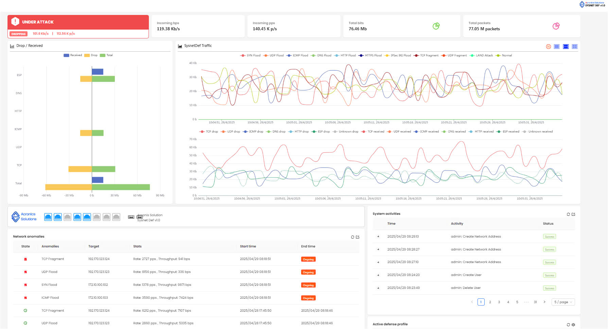

AntiDDoS device dashboard
AI-based DPI system for advanced cyber attack detection.
The need for a DDoS Defense Solution
Modern DDoS attacks are growing in both scale and complexity, exploiting the rapid expansion of the Internet of Things (IoT) and the availability of attack tools capable of generating traffic reaching hundreds of gigabits per second (Gbps).
Attackers increasingly employ multi-vector techniques, combining multiple attack methods at different protocol layers, which makes detection and mitigation significantly more challenging.
This escalating threat environment requires an adaptive, high-performance security solution that can effectively detect and mitigate DDoS attacks of varying intensity and form.
FPGA/ASIC-Based DDoS Defender Solution
The ACS DDoS Defender leverages FPGA/ASIC-based hardware acceleration to deliver real-time, parallel packet processing at the network edge, ensuring early detection and mitigation of high-bandwidth DDoS attacks.
This hardware-driven approach provides superior detection speed, low latency, and robust defense capabilities compared to traditional software-based systems.